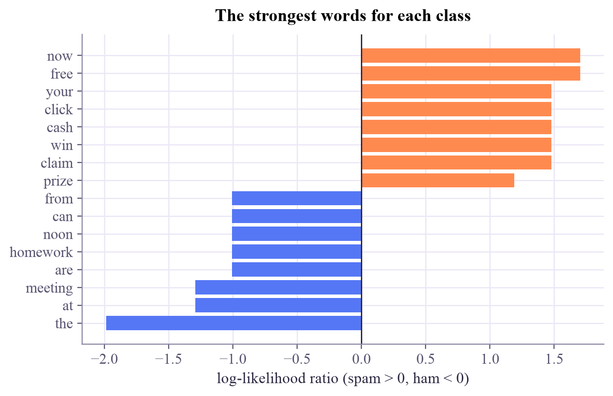
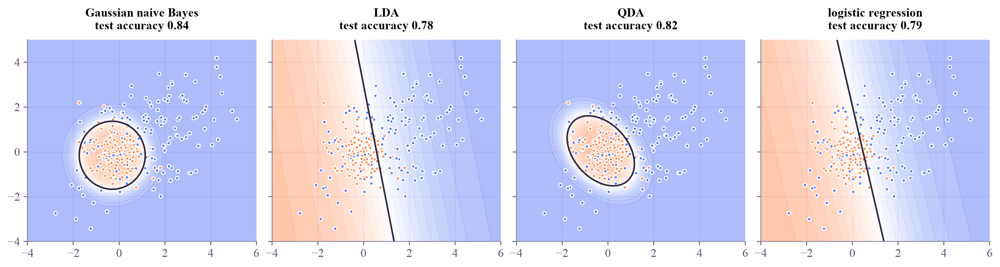

20 messages, 71 different words by hand: "free lunch at noon today": log-odds -1.92, P(spam) = 0.128 scikit-learn: P(spam) = 0.128
Machine Learning
 about 10 min
about 10 min ml-w8d1.ipynb
ml-w8d1.ipynb
Naive Bayes: adding up evidence
Bayes' rule turned into a classifier: every word in a message adds its own piece of evidence, and the total decides. Fast, simple, and still a strong baseline.
In this lesson you will
- Use Bayes' rule to turn class probabilities and feature likelihoods into a prediction
- Explain the naive assumption, and why logs turn it into a sum of evidence
- Know Gaussian naive Bayes, LDA and QDA, and what generative versus discriminative means
Warm-up
1 minA suspicious email

An email says "claim your free prize now". You don't need a model to smell spam: each of those words is far more common in spam than in normal mail, and together they're overwhelming. Today's classifier works exactly like your nose: it adds up how much each word points one way or the other.
Big idea
4 minBayes' rule, one word at a time
Logistic regression (week 3) models directly. Naive Bayes goes the other way round: it learns how each class produces data, then flips it with Bayes' rule:
is the prior: how common spam is before reading anything. is the likelihood: how probable this message is if it is spam. A message has many words, so the likelihood is hard to learn. The naive assumption makes it easy: pretend that, within a class, the words are independent, so the likelihood is a product:
Each is just counting: how often the word appears in the spam messages. Comparing the two classes and taking logs turns the products into sums:
Every word casts a vote: positive for spam, negative for normal mail ("ham"). The sigmoid from week 3 turns the total back into a probability. One trap: a word that never appeared in normal mail gets there, its log is , and that single word overrules everything. Add-one (Laplace) smoothing pretends every word was seen once more in every class.
The independence assumption is false ("free" and "prize" love to appear together), so the probabilities come out overconfident. But the ranking is often right, and that's all a classifier needs.
Generative models
Learn how each class produces data, , then use Bayes' rule: naive Bayes, and its relatives LDA and QDA, which model each class as a bell-shaped Gaussian cloud. They need little data and train in one pass.
Discriminative models
Learn the boundary directly, : logistic regression, SVMs, neural networks. With plenty of data they usually win, because they don't spend effort on modeling the data itself.
Naive Bayes adds up independent pieces of evidence: a prior plus one log-ratio per feature. Wrong in theory, fast and useful in practice.
Play
2 minThe evidence meter
The meter learned from 20 short messages, 10 spam and 10 not. Each row is one word's vote; the total gives P(spam).
Try this
Start with "free lunch at noon today": one spammy word against three friendly ones. Then slide Spam in the inbox to 95%: the same words, a different answer, because the prior changed. Finally switch off smoothing and type "free homework": two words, each never seen in one of the classes.
Code
2 minNaive Bayes in code
The notebook for this lessonEvery code cell below, with what it printed, is in
ml-w8d1.ipynb. To change the code and run it yourself, open the notebook in Google Colab (free, in your browser) or download it for your own Jupyter.import numpy as np
from sklearn.feature_extraction.text import CountVectorizer
from sklearn.naive_bayes import MultinomialNB
spam = ["win a free prize now", "claim your free gift card today", "you won cash click now",
"free entry to win a phone", "urgent claim your cash prize", "cheap meds click here now",
"winner you have been selected for a free cruise", "click here to claim your reward",
"limited offer win money fast", "get cash now no fees"]
ham = ["are we still meeting for lunch today", "can you send me the notes from class",
"the lab meeting moved to friday", "thanks for the help with the homework",
"see you at the library at noon", "did you finish the quantum homework",
"lunch at noon sounds good", "here are the slides from today",
"can we move our meeting to monday", "happy birthday hope you have a great day"]
texts = spam + ham
y = np.array([1] * len(spam) + [0] * len(ham)) # 1 = spam, 0 = not spam ("ham")
vec = CountVectorizer()
X = vec.fit_transform(texts).toarray() # one column per word, counts per message
words = vec.get_feature_names_out()
print(f"{len(texts)} messages, {len(words)} different words")
# P(word | class) with add-one (Laplace) smoothing, so an unseen word never gives probability 0
counts = np.array([X[y == c].sum(axis=0) for c in (0, 1)]) # (2 classes, words)
p_word = (counts + 1) / (counts.sum(axis=1, keepdims=True) + len(words))
prior = np.array([np.mean(y == 0), np.mean(y == 1)])
def log_odds(message):
"""log P(spam | message) - log P(ham | message): prior plus one term per known word."""
total = np.log(prior[1] / prior[0])
for w in message.split():
if w in vec.vocabulary_:
j = vec.vocabulary_[w]
total += np.log(p_word[1, j] / p_word[0, j])
return total
msg = "free lunch at noon today"
z = log_odds(msg)
print(f'by hand: "{msg}": log-odds {z:+.2f}, P(spam) = {1 / (1 + np.exp(-z)):.3f}')
nb = MultinomialNB(alpha=1.0).fit(X, y)
print(f"scikit-learn: P(spam) = {nb.predict_proba(vec.transform([msg]))[0, 1]:.3f}")What it printed in the notebook
import matplotlib.pyplot as plt
llr = np.log(p_word[1] / p_word[0])
order = np.argsort(llr)
pick = np.r_[order[:8], order[-8:]]
plt.figure(figsize=(7, 4.2))
plt.barh(words[pick], llr[pick], color=np.where(llr[pick] > 0, "#ff8a50", "#5577f5"))
plt.axvline(0, color="#2c2842", lw=1)
plt.xlabel("log-likelihood ratio (spam > 0, ham < 0)")
plt.title("The strongest words for each class")
plt.show()What it printed in the notebook

Look at the strongest "not spam" word: the. With only 20 messages, the model learns that spam is short and shouty. Real filters train on thousands of messages, and often drop such stop words first.
from sklearn.naive_bayes import GaussianNB
from sklearn.discriminant_analysis import LinearDiscriminantAnalysis, QuadraticDiscriminantAnalysis
from sklearn.linear_model import LogisticRegression
from sklearn.model_selection import train_test_split
from matplotlib.colors import LinearSegmentedColormap
rng = np.random.default_rng(1)
A = rng.multivariate_normal([0, 0], [[0.5, 0.0], [0.0, 0.5]], 200) # a tight round class
B = rng.multivariate_normal([1.2, 0.6], [[3.0, 1.4], [1.4, 2.4]], 200) # a wide, tilted one around it
X2 = np.vstack([A, B])
y2 = np.r_[np.zeros(200), np.ones(200)]
Xtr, Xte, ytr, yte = train_test_split(X2, y2, test_size=0.3, random_state=0)
apricot_blue = LinearSegmentedColormap.from_list("apricot_blue", ["#ff8a50", "#ffffff", "#5577f5"])
models = {"Gaussian naive Bayes": GaussianNB(), "LDA": LinearDiscriminantAnalysis(),
"QDA": QuadraticDiscriminantAnalysis(), "logistic regression": LogisticRegression()}
xx, yy = np.meshgrid(np.linspace(-4, 6, 220), np.linspace(-4, 5, 200))
fig, axes = plt.subplots(1, 4, figsize=(13, 3.4), sharey=True, layout="constrained")
for ax, (name, m) in zip(axes, models.items()):
m.fit(Xtr, ytr)
p = m.predict_proba(np.c_[xx.ravel(), yy.ravel()])[:, 1].reshape(xx.shape)
ax.contourf(xx, yy, p, levels=20, cmap=apricot_blue, alpha=0.5)
ax.contour(xx, yy, p, levels=[0.5], colors="#2c2842", linewidths=1.5)
ax.scatter(Xtr[:, 0], Xtr[:, 1], c=np.where(ytr == 0, "#ff8a50", "#5577f5"), s=10)
ax.set(xlim=(-4, 6), ylim=(-4, 5))
ax.set_title(f"{name}\ntest accuracy {m.score(Xte, yte):.2f}", fontsize=11.5)
plt.show()What it printed in the notebook

One class is a tight round cloud, the other a wide tilted one around it. LDA and logistic regression can only draw straight lines; naive Bayes and QDA, which give each class its own spread, draw the curve this data needs.
import time
from sklearn.datasets import load_breast_cancer
from sklearn.pipeline import make_pipeline
from sklearn.preprocessing import StandardScaler
Xc, yc = load_breast_cancer(return_X_y=True)
Xc_tr, Xc_te, yc_tr, yc_te = train_test_split(Xc, yc, test_size=0.3, random_state=0, stratify=yc)
for name, m in [("Gaussian naive Bayes", GaussianNB()),
("logistic regression", make_pipeline(StandardScaler(), LogisticRegression(max_iter=1000)))]:
t0 = time.perf_counter()
m.fit(Xc_tr, yc_tr)
print(f"{name:22s} test accuracy {m.score(Xc_te, yc_te):.3f} trained in {1000 * (time.perf_counter() - t0):.1f} ms")What it printed in the notebook
Gaussian naive Bayes test accuracy 0.924 trained in 1.2 ms logistic regression test accuracy 0.959 trained in 4.2 ms
Your turn
optionalYour turn: write your own messages
Write a clearly spammy message, a normal one, and one that mixes both kinds of words. Print P(spam) for each, and the three words that pushed hardest.
my_messages = ["TODO: a spam message", "TODO: a normal message", "TODO: a mixed one"]
for m in my_messages:
p = None # TODO: nb.predict_proba(vec.transform([m]))[0, 1]
known = [w for w in m.lower().split() if w in vec.vocabulary_]
top = None # TODO: the 3 words in `known` with the largest abs(llr[vec.vocabulary_[w]])
print(f"{m!r}: P(spam) = {p}, strongest words: {top}")Need a hint?
sorted(known, key=lambda w: -abs(llr[vec.vocabulary_[w]]))[:3] sorts the known words by the size of their vote, biggest first.
Show a solution
my_messages = ["claim your free cash prize now", "can you send me the lab notes", "free pizza at the lab meeting"]
for m in my_messages:
p = nb.predict_proba(vec.transform([m]))[0, 1]
known = [w for w in m.lower().split() if w in vec.vocabulary_]
top = sorted(known, key=lambda w: -abs(llr[vec.vocabulary_[w]]))[:3]
print(f"{m!r}: P(spam) = {p:.3f}, strongest words: {top}")
print("Words the model never saw (like 'pizza') add no evidence at all: they are simply skipped.")What it printed in the notebook
'claim your free cash prize now': P(spam) = 1.000, strongest words: ['free', 'now', 'claim'] 'can you send me the lab notes': P(spam) = 0.003, strongest words: ['the', 'can', 'send'] 'free pizza at the lab meeting': P(spam) = 0.030, strongest words: ['the', 'free', 'at'] Words the model never saw (like 'pizza') add no evidence at all: they are simply skipped.
Check yourself
1 minQuick check
Question 1 of 3
What is "naive" about naive Bayes?
Question 2 of 3
Without smoothing, a message contains a word that never appeared in normal mail. What happens?
Question 3 of 3
LDA draws straight boundaries and QDA curved ones. Why?
Wrap-up
1 minToday in one sentence
Quantum link
In the Quantum Computing tutorial's first project you estimated a hidden angle from measurement counts; Bayes' rule is another way to do it, by updating a prior over the angle after every shot. And quantum state discrimination (Quantum ML, week 4) asks the same question as today: given what I measured, which state, which class, is more likely?
Go deeper (optional)
ISLP section 4.4 (generative models: LDA, QDA and naive Bayes, with a careful comparison to logistic regression in section 4.5). A classic on why naive Bayes works despite its false assumption: Domingos and Pazzani, "On the optimality of the simple Bayesian classifier under zero-one loss" (Machine Learning, 1997).
Tomorrow: boosting, where small trees take turns fixing each other's mistakes.

That's the lesson!
Tap the button to save it. Short and steady wins.
Marked by mistake? Undo